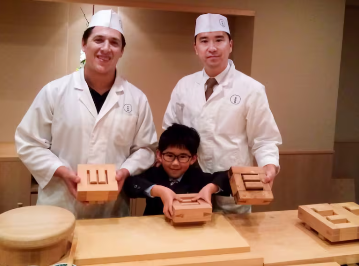
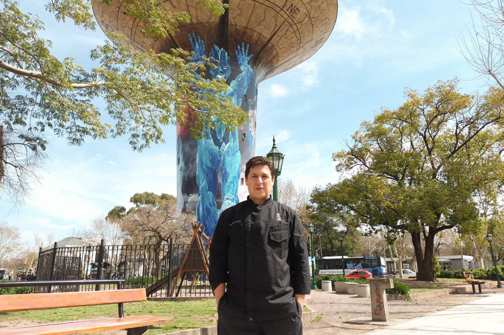
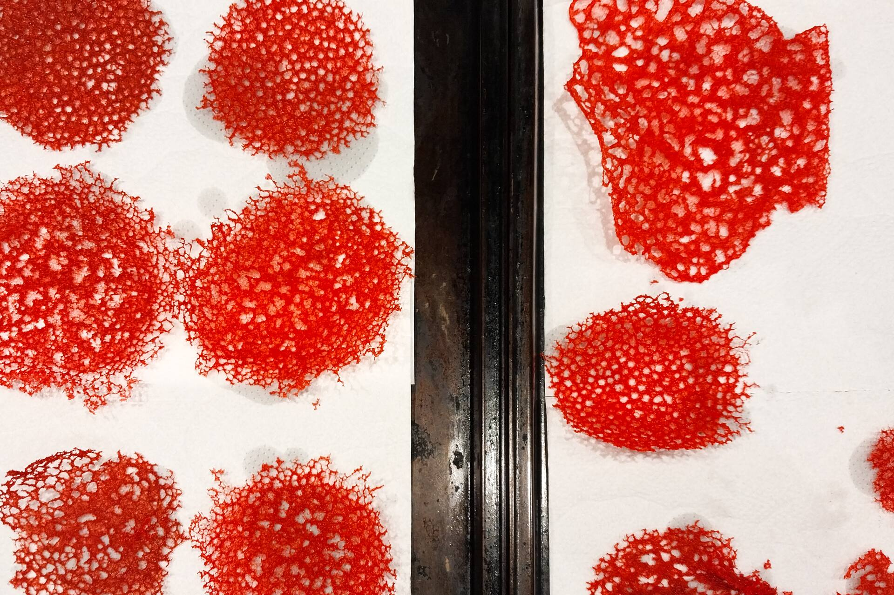
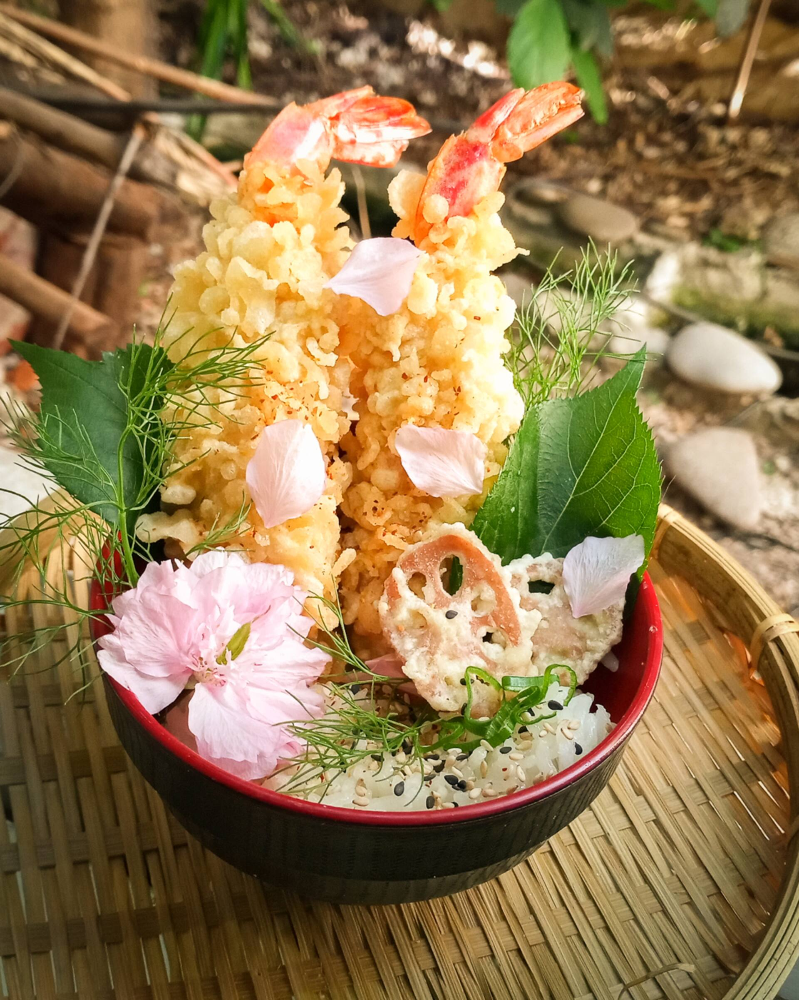
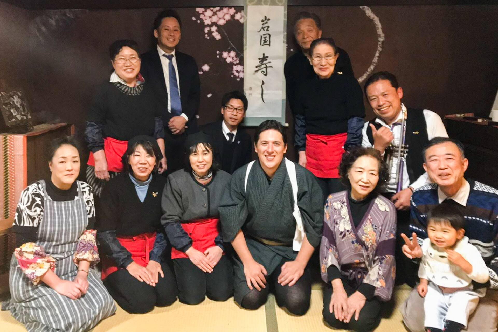
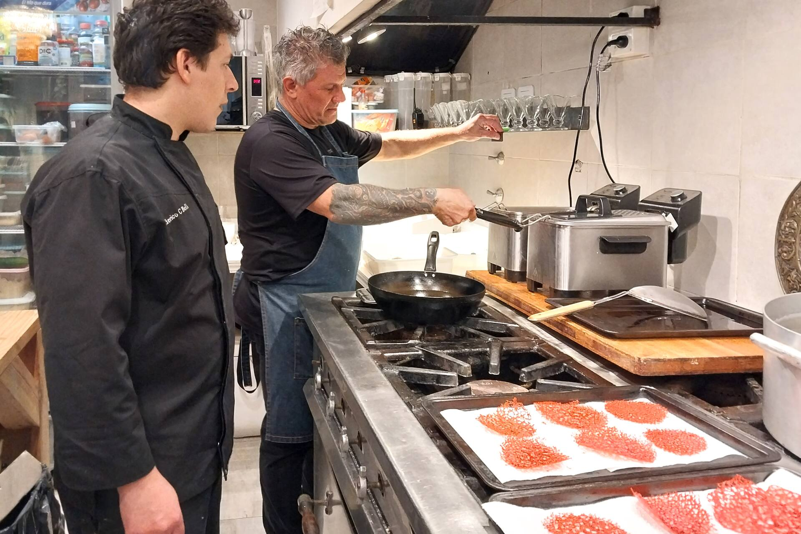

Federico Bello, experto en sushi formado en Japón.
Guadalupe Faraj
Federico Bello tiene una escuela de gastronomía y se especializa en Iwakunizushi, una de las variedades de sushi que sorprende por su tamaño y complejidad.
10 de enero de 2024 09:06 7 minutos de lectura

Federico Bello tomando clases con el profesor Hashimoto-san de la variedad Osakazushi.
Gentileza
Nada de Sushi Man , esa palabra no existe para un japonés. Cuando se le pregunta a Federico Bello qué es él, simplemente dice,
“soy profesor de cocina especializado en gastronomía japonesa.”. Y todo por qué. Por culpa de las gyozas. Un plato típico de la cocina
oriental parecido a una pasta rellena o a una empanada tres veces más chica que las que se conocen en Argentina, y que el padre de Federico,
Raúl Ángel Bello, sabía elaborar a la perfección porque le encantaban y porque era un amante de la cocina nipona. “Recuerdo que de chico
salía del colegio, pero en vez de volver a casa como la mayoría de los chicos, yo volvía a un restaurante”.
Más o menos así transcurrió su infancia, entre caldos, harinas y vegetales, ruidos de cocina. Podía ser que alguien le diera
la tarea de lavar una verdura, podía ser que corriera entre mostradores haciendo enojar al cocinero, o que se quedara embelesado
mirando cocinar a su papá. “Tengo cariño por los momentos en los que lo veía. Cocinar era su forma de expresarse. A través de la cocina,
me enseñó la importancia de compartir momentos especiales alrededor de la mesa y cómo la comida puede ser una poderosa forma de unir a las
personas. Él me enseño y me dio los primeros pasos para que yo esté acá hoy”.

Vive en la provincia de Buenos Aires, en Monte Grande, una ciudad de 340.000 habitantes.
Está casado con Mariana Eleonor Higa, una mujer japonesa a la que conoció estudiando francés. Mariana se
enteró de sus habilidades en la cocina asiática, se acercó a Federico y le consultó acerca de un plato
que no le salía bien: el Yasai Itame (salteado de verduras). Al parecer, la versión de ella quedaba
demasiado salada. A partir de esa unión, ella aprendió a hacer el salteado de verduras, y él ingresó
a la comunidad japonesa en esta parte de Argentina.
Federico se especializa en
Iwakunizushi, un tipo de sushi monumental que puede pesar 7 kilos y rendir
160 piezas de una sola elaboración.
La televisión japonesa lo llevó tres veces a Japón, país donde se
formó cada vez con más puntillismo y detalle. En el 2020 abrió su Escuela de Cocina Iwakuni en la ciudad de
Monte Grande, aunque hace más de quince años se dedica a la docencia, enseñando a chef profesionales, licenciados en
nutrición, doctores, profesionales, profesores de cocina, amateurs y amantes de sushi. Además, es jefe de
cocina de Umaré, un restaurante de sushi ubicado en la ciudad de Lobos.

Tuiles Coral, que elabora Federico, con sabor a camarones o langostinos.
GentilezaUn amor para toda la vida
Al primero que evoca de una larga lista de nombres y palabras japonesas o castellanas es a su padre Raúl. Alguien para quien la cocina tenía un lugar fundamental, el mismo lugar que hoy tiene para Federico. “...era un amante apasionado de la cocina y se daba mucha maña en la preparación de diversos platos” . Amaba comer gyozas. Se la pasaba amasando, haciendo los rellenos, compartiendo ese plato en la cena cotidiana o en algún evento familiar. “Hoy en día yo me dedico a hacer gyozas, se lo enseño a mis alumnos. Pero en esa época, cuando lo veías, parecía que era una monstruosidad de trabajo, la masa, la harina y todo lo demás”. Su padre, que también sabía hacer nigirirs o fideos salteados, es el primer maestro que tuvo. Luego vino un derrotero de diversas experiencias que llegarían a lo largo del tiempo. Una de las más increíbles fue, sin duda, haber viajado tres veces a Japón, donde pudo perfeccionarse, recorrer ciudades, conocer a Marimoto san, su otra gran maestra a la que Federico llama profesora.

Ebi-tenpura (langostinos fritos en masa). Técnica de fritura profunda, estilo japonés, denominada "tempura".
Gentileza
“La televisión japonesa busca fanáticos o gente que tenga muchos conocimientos de Japón.
Yo estuve seleccionado dentro de ese programa para seguir viajando. Iba allá a
estudiar la parte tradicional japonesa, entrar a restaurantes, que es muy difícil
entrar, y estudiar en escuelas tradicionales de sushi”.
La primera vez que Federico pisó Japón sintió que estaba frente a una irrealidad,
un sueño no del todo cómodo, lo que se presentaba antes su ojos le era ajeno,
probablemente porque había viajado durante 30 horas y eso resulta agotador para
cualquiera. Pero además ¡había llegado a Japón!
Lo aprendido a lo largo de 29 años de vida, se materializaba de una vez en ese
ansiado destino; en sonidos, ritmo, olores, palabras. Poco a poco las
sensaciones se fueron acomodando, “Sentí cómo se activaban mis sentidos.
Caminar por las calles que tantas veces había visto en la televisión y en
documentales fue una experiencia esperada durante toda mi vida.
Desde que tengo memoria, este viaje era un sueño.

En la escuela de cocina tradicional Sakurakōbō, dónde estudió iwakunizushi, junto a su profesora Morimoto-san, alumnas, alumnos y representantes de promoción turística de la ciudad de Iwakuni.
GentilezaIwakunizushi o gigantosushi
A su profesora Marimoto la conoció en la Escuela Sakurakobos,
una de las más importantes de sushi,
ubicada en la ciudad de Iwakuni, prefectura de Yamaguchi, muy cerca Hiroshima.
“Allí,
pude sumergirme en las técnicas tradicionales de una de las variedades de sushi más grande de tamaño que hay”.
El iwakunizushi lleva siete horas de elaboración, requiriendo mucho tiempo para cada uno de los detalles.
Su volumen es asombroso, tiene un peso total de alrededor de 7 kilos, lo que permite obtener más de 160 p
orciones. Los ingredientes son los que lleva cualquier variedad de sushi, pescado y arroz,
luego verduras, mariscos y un ingrediente que lo diferencia de cualquier otro tipo de sushi
y que es su particularidad, el renkon (raíz de loto): se cultiva en agua (no en tierra),
en la misma región, por familias que poseen parcelas individuales y están dedicadas
solamente a esa producción.
El renkon de Iwakuni es considerado el mejor de Japón, “...
es el ingrediente que hace que el Iwakunizushi sea el Iwakunizushi”.

Iwakunizushi, la variedad de sushi más grande que existe. Es la especialidad de Federico y se usa, generalmente, para fiestas y eventos.
GentilezaFederico también pasó por la ciudad de Osaka, donde tuvo la oportunidad de aprender en Yoshinozsushi, un restaurante que vio sus orígenes en 1841, va por la séptima generación de chef y, desde 2019, figura en la guía Michelín. El profesor y propietario Hashimoto-san es el que se dedica a mantener viva la tradición de su familia, todos y cada uno de los días. “Tuve el privilegio de poder estudiar junto a él, una de las variedades que es la más emblemática de la ciudad de Osaka y Japón, el “Osakazushi”. Hace más de 180 años, se esfuerzan día a día para mantener viva una tradición que no sufrió ninguna alteración en el proceso de creación, desde sus inicios. “El restaurante es imponente, tiene tres pisos. La planta baja es un mostrador donde hacen ventas, el primer piso es el salón, en el segundo piso tenés una cocina, en el tercer piso otra cocina. Es un icono del sushi de la región”.
Plato combinado con técnicas de sushi tradicional japonés "Futomakizushi", con variedades de sushi fusión.
GentilezaIwakuni, la escuela de cocina japonesa de Monte Grande
En el 2020, con muchísimo esfuerzo, Federico y Mariana, con la ayuda de familiares y amigos, abrieron la Escuela Iwakuni, en Monde Grande, un lugar sencillo, pero impecablemente equipado. Además de enseñar la elaboración del iwakunizushi, Federico enseña a hacer platos típicos, en cursos que no admiten más de cinco o seis personas.

Un sábado a la noche, en el trajín de la cocina de Umaré, donde Federico es jefe de cocina.
Gentileza
Los fines de semana viaja a Lobos, para hacerse cargo de la cocina de Umaré,
el restaurante de sushi de alta calidad de Leandro Maglione, un alumno de
él que un día quiso abrir una casa de sushi y tragos de autor y le ofreció a
Federico hacerse cargo de la cocina.
Yoshinozsuhi; gyoza, jiaozi o dumpling; Sakurakobos; Morimoto-san; Iwakuni, renkon,
yasai itame.
Palabras en japonés que pertenecen a una cultura diferente a la nuestra,
pero que para Federico son tan familiares como su infancia, como los primeros sabores.
Como el recuerdo de un padre que supo legarle secretos culinarios de otro tiempo y lugar.
Datos útiles
Escuela de cocina japonesa Iwakuni. De lunes a viernes de 9 a 15 hs.
Los cursos se dictan de 9 a 11.30 hs. Consultas durante todo el día.
Leandro N. Alem 1200, B1842 Monte Grande, Provincia de Buenos Aires.
IG: @iwakuni_federicobello
Restaurante Umaré. Viernes y sábados, a partir de 20 hs. Rivadavia 188,
Lobos. IG: @umare.lobos